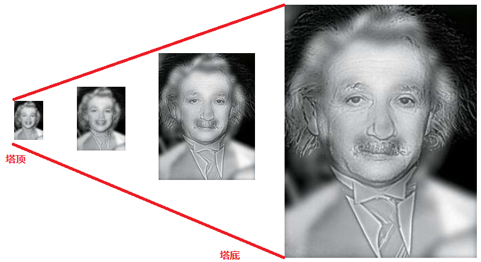
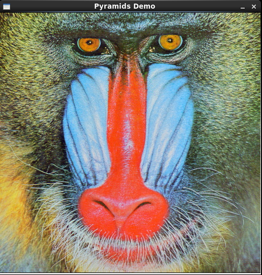
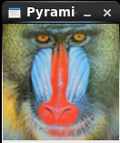
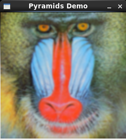
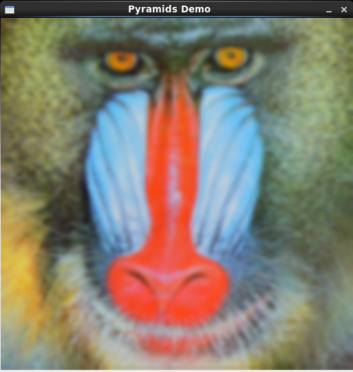

文题：OpenCV图像处理篇之采样金字塔
作者：xiahouzuoxin
日期：2014-09-20
转载请注明出处：http://xiahouzuoxin.github.io/notes
图像金字塔是通过将原始图像经过平滑、下采样所生成一系列具有不同分辨率的图像的集合。金字塔结构(Pyramid)适于多分辨率处理的一种图像存储数据结构。
最常用的生成图像金字塔的方法是采用高斯函数平滑图像，每次将分辨率降低为原来的一半，由此得到一个图像序列{ML，ML-1，……，M0}，图像金字塔的存储量为N^2*(1+1/4+1/16+...)=(4*N^2)/3。

如上图：最右边为原始图像，从右到左依次为使用高斯平滑1次、2次和3次后的图像，这些图像共同组成了图像金字塔。
图像金字塔这种结构在图像处理中有广泛的用途。最著名的特征匹配算子SIFT就是通过构造图像金字塔来完成的。有关图像金字塔在SIFT特征提取算法中的应用可参见Rachel Zhang的博文"SIFT特征提取分析"。
/*
* FileName : pyramids.cpp
* Author : xiahouzuoxin @163.com
* Version : v1.0
* Date : Sat 20 Sep 2014 07:04:29 PM CST
* Brief :
*
* Copyright (C) MICL,USTB
*/
#include <iostream>
#include "cv.h"
#include "highgui.h"
#include "opencv2/imgproc/imgproc.hpp"
using namespace std;
using namespace cv;
const char *wn = "Pyramids Demo";
int main(int argc, char *argv[])
{
if (argc < 2) {
cout<<"Usage: ./pyramids [file name]"<<endl;
return -1;
}
Mat src = imread(argv[1]);
if (!src.data) {
cout<<"Error: read image error."<<endl;
return -1;
}
/* Size of input image must be 2^n */
if ( src.cols & (src.cols-1) ) { // src.cols > 0 first
cout<<"Error: input image's column must be 2^n"<<endl;
return -1;
}
if ( src.rows & (src.rows-1) ) { // src.cols > 0 first
cout<<"Error: input image's row must be 2^n"<<endl;
return -1;
}
cout<<"User Guide:"<<endl;
cout<<"---------------------"<<endl;
cout<<"u -> Zoom out"<<endl;
cout<<"d -> Zoom in"<<endl;
cout<<"ESC -> Exit program"<<endl;
namedWindow(wn, WINDOW_AUTOSIZE);
imshow(wn, src);
Mat cur = src;
Mat dst = cur;
int end_while = 0;
while(!end_while) {
char c;
c = waitKey(10);
switch (c) {
case 27: /* ESC */
end_while = 1;
break;
case 'u':
pyrUp(cur, dst, Size(cur.cols*2, cur.rows*2));
imshow(wn, dst);
cur = dst;
break;
case 'd':
pyrDown(cur, dst, Size(cur.cols/2, cur.rows/2));
imshow(wn, dst);
cur = dst;
break;
default:
break;
}
}
}使用高斯图像金字塔进行降采样和插值的函数分别是pyrDown和pyrUp，参数依次为原图像、采样结果图像、采样后的图像尺寸。
上述程序中的降采样操作因为都是按2为倍数进行的，因此要求输入图像的长宽都必须是2^n。if ( src.cols & (src.cols-1) )是用来判断原图像的列是否为2^n的语句。请仔细体会这种判断某个数是否是2^n的方法——x*(x-1)返回0表示x是2^n，否则不是。
下面一系列图片展现的是先将原图像通过图像金字塔降采样（会存在数据丢失），再通过金字塔插值恢复图像过程中图像的变化过程。由于降采样过程中存在数据丢失，所以可以看到恢复到原图像大小后的图像比原图像模糊。

图注 原图像
图注 1次降采样后的图像

图注 2次降采样后的图像

图注 2次降采样后，再经过1次图像金字塔插值操作后的图像，大小与1次降采样后图像相同，但变得模糊

图注 2次降采样后，再经过2次图像金字塔插值操作后的图像，大小与原图相同，但变得模糊